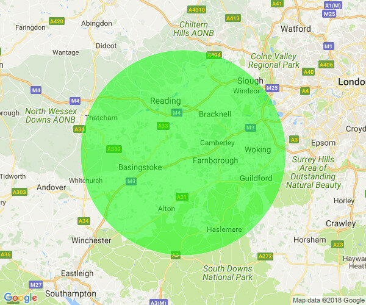

Free Anxiety & Depression Group Support
Coping with Depression or Anxiety? In Person Support Group for People living near Odiham in Hampshire.
Hart Voluntary Action (HVA) have secured funding from a local consortium of GP’s to start up a completely free local support group. The group has been set up specifically for local people coping with depression and anxiety. The group will run from Odiham Cottage Hospital and anyone within a 20 mile radius is entitled to apply.


Is it for me?
A brief phone call with the group co-ordinator may be required to briefly discuss your medical history and suitability for the group. They can answer any questions you may have and explain more about what to expect.
Is it Therapy?
A support group is not the same as one to one counselling or group therapy as those are much more focused on your individual issues however it is a great therapeutic tool and from my experience can become for many people a great source of relief from the isolation that depression and anxiety often creates. Getting back out in the community and meeting people can be a very important step forwards.
What happens at a support group?
Every support group is different and you will find that each one has its own ‘flavour’ depending on the group facilitators and group members. If you have been to one before and didn’t like it then this may not be the same so give them a try!
The evening always starts with a welcome coffee and then there is an informal group chat where you can share your story and your feelings if you wish to. Engaging in the group conversation is often what helps you and helps others too but you can also just come along and listen if you are feeling a bit nervous or too low or scared to talk. You would certainly never be made to join in.
Sometimes other group members may share their personal experiences and it is therapeutic to realise you are not alone with your feelings and others may also have ideas or self help tools they have tried and can share with you. If the facilitator has any information or knowledge of other local support services then they are there to share that too. It is a friendly and welcoming environment and the emphasis is on creating a safe place to share feelings and experiences.
Where is it?
The evening group runs from Odiham Cottage Hospital. There is plenty of parking and disabled access. The group is run from a room on the ground floor and there will be a maximum of ten group members. This evening group is aimed towards those working and perhaps unable to make daytime groups. There is also a daytime group available. Further information is available from the Hart Voluntary Action team based in Fleet.
Follow this link for more details
https://hartvolaction.org.uk/
Contact Number: 01252 815652
Email: sunshineandshowers@
As of April 2014 I ended my evening facilitation work with HVA to enable me to concentrate on my private practice but the group does continue to run with a new facilitator and offers local people a great free resource.
Memberships